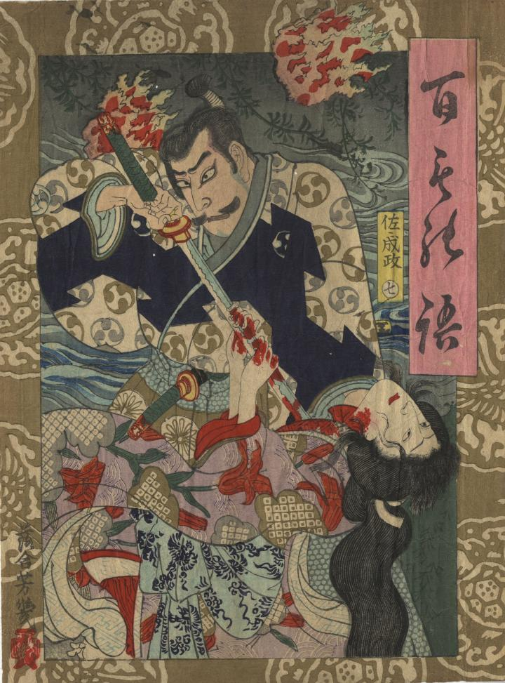

佐々成政が側室の早百合を刀で殺している。背後に早百合の死後出るようになったという「ぶらり火」といわれる火の玉がみえる。
著作者：落合芳幾／出典：親書誌：U426_nichibunken_0414：百もの語 佐〃成政；ヒャクモノガタリ サッサ ナリマサ／日付：2015／資源識別子：U426_nichibunken_0414_0001_0000
Copyright (c)2010- International Research Center for Japanese Studies, Kyoto, Japan. All rights reserved.